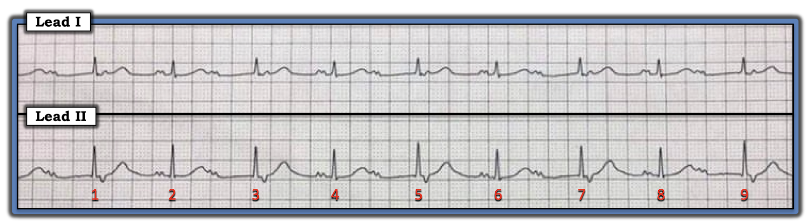
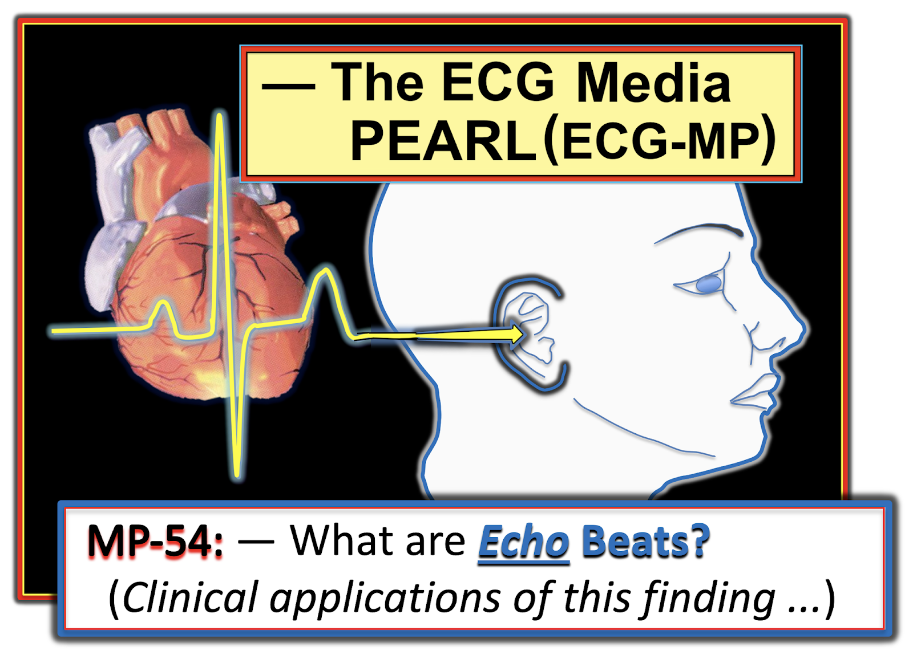
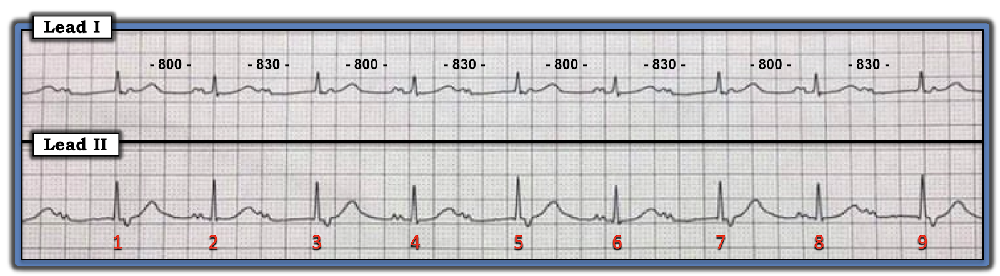
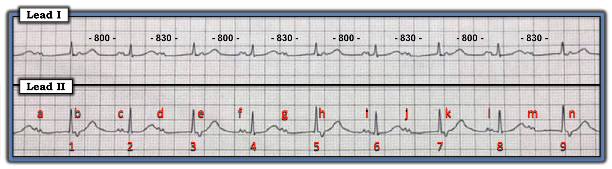
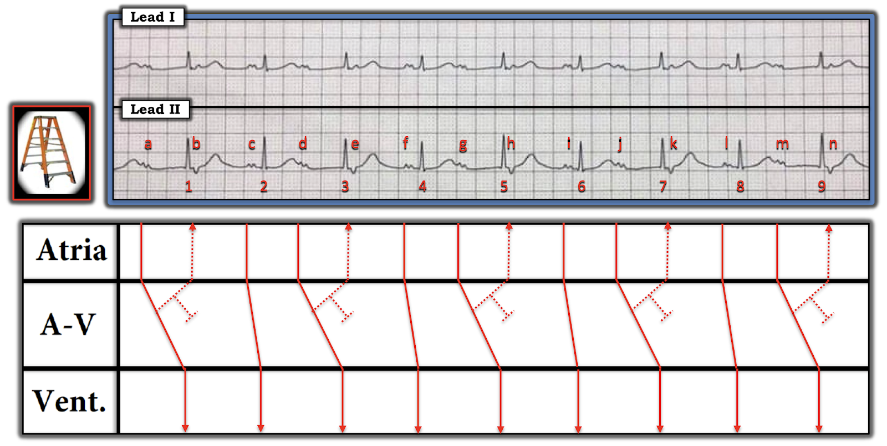
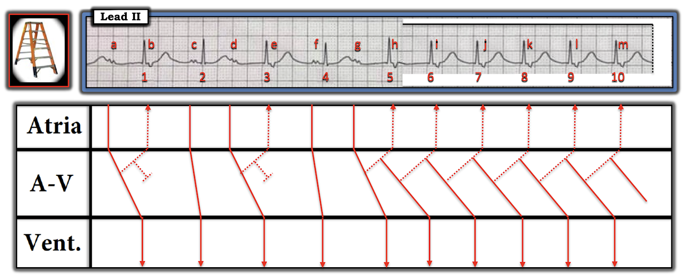

ECG Blog #239 (54) — Vì sao có 2 loại sóng P?
Ca hôm nay là một điện tâm đồ hấp dẫn, dù không có thông tin lâm sàng (Hình-1).
- Bạn đọc điện tâm đồ trong Hình-1 như thế nào?
- Và — TẠI SAO lại có 2 loại sóng P?


=======================================
LƯU Ý: Đến đây, một số bạn đọc có thể muốn nghe ECG Audio PEARL dài 5:00 phút trước khi đọc Suy nghĩ của tôi về điện tâm đồ trong Hình-1. Bạn có thể xem Suy nghĩ của tôi về bản ghi này bất cứ lúc nào (nằm bên dưới ECG MP-54).
=======================================


ECG Media PEARL #54 (5:00 phút Audio) hôm nay — Ôn lại nhát dội (echo) là gì — và ứng dụng lâm sàng của dấu hiệu điện tâm đồ này.
SUY NGHĨ CỦA TÔI về ca này:
Như thường lệ — tôi đọc nhịp theo cách hệ thống bằng cách xem xét Ps, Qs & 3Rs (Xem ECG Blog #185). LƯU Ý — Không bắt buộc phải đánh giá theo đúng thứ tự này (tức tôi thường xem độ rộng QRS hoặc tính đều của nhịp trước khi đánh giá hoạt động nhĩ — tùy theo yếu tố nào dễ đánh giá nhất trên bản ghi đang xem). Với nhịp trong Hình-1 — trình tự suy nghĩ lần lượt của tôi như sau:
- Phức bộ QRS hẹp — nên nhịp này là nhịp trên thất.
- Dù thoạt nhìn lần 1, nhịp trong Hình-1 có vẻ đều — nhịp này không đều! Thay vào đó, có nhịp theo nhóm (group beating), dưới dạng các khoảng R-R dài hơn và ngắn hơn một chút xen kẽ nhau.
- LƯU Ý: Để chứng minh nhịp trong Hình-1 thực sự là nhịp theo nhóm — Hãy đo tất cả các khoảng R-R! Việc này dễ nhất khi dùng compa đo (calipers). Làm vậy sẽ xác định được rằng mọi khoảng R-R "ngắn hơn" đều có cùng thời gian ( = 800 msec) — và — mọi khoảng R-R "dài hơn" đều có cùng thời gian ( = 830 msec), dù chỉ dài hơn một chút (tức 830 so với 800 msec — như trong Hình-2).


ĐIỂM THEN CHỐT (PEARL) #1: Như chúng tôi vẫn thường nhấn mạnh (Xem ECG Blog #186) — dấu hiệu nhịp theo nhóm là manh mối rất tốt cho thấy nhiều khả năng có một dạng dẫn truyền Wenckebach nào đó!
- LƯU Ý: Không phải mọi nhịp theo nhóm đều do dẫn truyền Wenckebach. Lý do là các tình trạng khác (tức nhịp đôi hay nhịp ba nhĩ hoặc thất) cũng có thể tạo ra kiểu "không đều có quy luật" cho nhịp. Tuy vậy — Nhận ra nhịp theo nhóm là hữu ích — vì nó ngay lập tức nhắc ta tìm kỹ một dạng dẫn truyền Wenckebach nào đó.
Tiếp tục với cách tiếp cận Ps, Qs & 3Rs:
- Sóng P có hiện diện trong Hình-2. Tuy nhiên, có 2 hình dạng sóng P khác nhau!
Cho rõ ràng — chúng tôi đã đánh dấu tất cả sóng P trong bản ghi hôm nay ở Hình-3.
- CÂU HỎI: Tại sao lại có 2 loại sóng P?


SUY NGHĨ CỦA TÔI về Hình-3:
2 loại sóng P thấy trong Hình-3 là sóng P dương, có khía hình chữ m ở chuyển đạo II ( = a, c, d, f, g, i, j, l, m) — và sóng P âm, nông ở chuyển đạo II xuất hiện ngay sau phức bộ QRS của các nhát #1, 3, 5, 7 và 9 ( = b, e, h, k, n).
- Sóng P xoang phải dương ở chuyển đạo II. Điều này gợi ý rằng các sóng P dương, có khía hình chữ m mà ta thấy trong Hình-3 là sóng P xoang.
- Khi sóng P âm ở chuyển đạo II — điều này gợi ý hoặc: i) Các sóng P âm này xuất phát từ vị trí thấp hơn trong tâm nhĩ (hoặc từ nút AV); hoặc, ii) Có dẫn truyền ngược dòng.
ĐIỂM THEN CHỐT (PEARL) #2: Các sóng P xoang mà ta thấy trong Hình-3 có vẻ được dẫn truyền. Chúng tôi nói vậy vì có 2 bộ khoảng PR lặp lại!
- Các khoảng PR trước nhát #2, 4, 6 và 8 bằng nhau ( = 0,17 giây).
- Các khoảng PR trước nhát #1, 3, 5, 7 và 9 cũng bằng nhau ( = 0,47 giây).
- Rất khó có khả năng các khoảng PR bằng nhau chính xác ở nhiều vị trí như vậy trên bản ghi lại là ngẫu nhiên. Thay vào đó — các khoảng PR lặp lại này hẳn phải cho thấy mọi nhát này đều được dẫn truyền!
Còn lại việc xác định nguyên nhân của các sóng P âm này trong Hình-3 (tức b, e, h, k và n).
- Chống lại khả năng các sóng P này là sóng P ngược dòng từ một nhịp bộ nối — là việc có khoảng PR cố định (dù dài) trước các nhát #1, 3, 5, 7 và 9 (tức các nhát #1, 3, 5, 7 và 9 là nhát dẫn truyền từ xoang chứ không phải nhát thoát bộ nối).
- Chống lại khả năng các sóng P b, e, h, k và n là PAC bị blốc — là điều ta chờ đợi rằng PAC bị blốc sẽ "cài đặt lại" nút SA, và tạo ra khoảng trễ dài hơn sau các nhát #1, 3, 5, 7 và 9. Thay vào đó — các khoảng R-R ngắn nhất trên bản ghi này lại đi sau các sóng P âm này.
- Bằng phương pháp loại trừ — các sóng P âm này nhiều khả năng nhất là nhát dội (echo)!
THẾ NÀO là Nhát dội (echo)?
Đôi khi, một xung động nhĩ đã đi qua tâm nhĩ — có thể được dẫn truyền ngược lại (tức ngược dòng) — để quay về và hoạt hóa lại tâm nhĩ. Quá trình này tạo ra một nhát dội (echo). Nếu thời điểm của nhát "dội" vừa khớp — xung động cũng có thể lan xuống dưới để hoạt hóa tâm thất.
- ĐIỂM THEN CHỐT (PEARL) #3: Yếu tố chính thuận lợi cho sự xuất hiện nhát dội là chậm dẫn truyền qua nút AV — như thường gặp trong blốc AV độ 2 Mobitz I (tức Wenckebach AV). Lý do rất đơn giản — sóng P mất càng lâu để đi qua nút AV — thì càng có nhiều cơ hội cho dẫn truyền ngược dòng xảy ra.
- Vì nhát dội được dẫn truyền ngược (ngược dòng) về tâm nhĩ — nên sóng P do dẫn truyền ngược dòng này tạo ra sẽ âm ở chuyển đạo II.
ĐIỂM THEN CHỐT (PEARL) #4: Đôi khi, có thể khó phân biệt nhát dội với PAC — vì cả hai đều có thể tạo ra sóng P âm ở chuyển đạo II.
- NHƯNG — NẾU sóng P âm chỉ xuất hiện sau khi khoảng PR đi trước kéo dài ra — điều này gợi ý mạnh rằng các sóng P âm này là nhát dội (theo khái niệm nêu ở Pearl #3).
============================
Một hình ảnh đáng giá hơn 1.000 lời!
- Hãy xem giản đồ bậc thang (laddergram) mà tôi đề xuất trong Hình-4.


SUY NGHĨ CỦA TÔI về Hình-4:
Thú nhận: Tôi đã không thấy yên tâm với đánh giá của mình về nhịp hôm nay cho tới khi vẽ ra được một cách giải thích hợp lý trên giản đồ bậc thang.
- Tôi rất nghi ngờ có một dạng Wenckebach AV nào đó đang vận hành trong Hình-3 — vì có nhịp theo nhóm và 2 khoảng PR lặp lại. Nhưng việc sóng P xoang không đều trong suốt dải nhịp cho thấy có điều gì đó khác ngoài Mobitz I "đơn thuần" đang diễn ra.
- NẾU nhịp trong Hình-3 là Wenckebach AV — thì mức tăng khoảng PR (tức lượng khoảng PR tăng lên từ 1 nhát sang nhát kế tiếp) lớn hơn nhiều so với thường lệ (tức bước nhảy từ khoảng PR 0,17 giây lên 0,47 giây nghĩa là mức tăng PR = 0,30 giây, cực kỳ dài!). Dù không phổ biến — sự hiện diện của đường dẫn truyền kép trong nút AV có thể giải thích mức tăng khoảng PR lớn bất ngờ này.
- Giản đồ bậc thang tôi vẽ trong Hình-4 dựa trên giả định rằng các sóng P b, e, h, k và n là nhát dội. Đây là một giả định hợp lý — vì các sóng P âm này ở chuyển đạo II chỉ xuất hiện sau khi khoảng PR của các nhát dẫn truyền từ xoang đi trước kéo dài ra (theo Pearl #3 và #4).
- Trong Hình-4 — Dẫn truyền ngược dòng về tâm nhĩ của các nhát dội nhĩ này (tạo ra các sóng P âm b, e, h, k và n ở chuyển đạo II) — được biểu diễn bằng các đường chấm chấm trên giản đồ bậc thang.
=============================
Diễn giải cuối cùng về Hình-4:
Diễn giải cuối cùng của tôi về nhịp hôm nay (như được biểu diễn dưới dạng sơ đồ trong giản đồ bậc thang ở Hình-4) — là blốc AV độ 2, Mobitz loại I, với các chu kỳ Wenckebach được kết thúc bởi các nhát dội nhĩ. Có lẽ mức tăng khoảng PR rõ rệt là do dẫn truyền luân phiên giữa các đường dẫn truyền kép trong nút AV.
=============================
ĐIỂM THEN CHỐT (PEARL) #5: Blốc AV độ 2 loại Mobitz I không biến chứng đặc trưng bởi nhịp nhĩ đều (hoặc gần đều) — với khoảng PR tăng dần cho tới khi một nhát bị rớt. Tuy vậy, đôi khi — các chu kỳ Wenckebach AV có thể bị kết thúc bởi những biến cố điện tâm đồ khác xảy ra trước khi sóng P đúng lúc kế tiếp kịp phát ra từ nút SA. Ví dụ về các hiện tượng khác có thể kết thúc chu kỳ Wenckebach gồm nhát thoát bộ nối — PAC — và — nhát dội.
- Đây chính xác là điều xảy ra trong Hình-4! Các nhát dội nhĩ (tức các sóng P b, e, h, k và n) tới tâm nhĩ ngay trước khi sóng P xoang kế tiếp xuất hiện. Kết quả là — các nhát dội nhĩ này ức chế xung động xoang kế tiếp — và qua đó, kết thúc từng chu kỳ Wenckebach 2 nhát thấy trên giản đồ bậc thang này.
Còn vì sao khác mà ta nên quan tâm đến nhát dội?
Nhát dội không thường gặp trong thực hành. Tuy vậy, khi chúng có xảy ra — chúng có thể mang ý nghĩa lâm sàng quan trọng. Vì thế — biết đến khái niệm rối loạn nhịp nâng cao này là hữu ích. Hãy xem Hình-5.
- CÂU HỎI: Bạn có thể giải thích điều gì xảy ra trong Hình-5 không?


SUY NGHĨ CỦA TÔI về Hình-5:
5 nhát đầu tiên trong Hình-5 giống hệt những gì ta đã thấy trên giản đồ bậc thang ở Hình-4 — tức là Mobitz I (với mức tăng khoảng PR lớn) — rồi được kết thúc bởi các nhát dội nhĩ b và d.
- Các chu kỳ Wenckebach 2 nhát tiếp tục với nhát #4 và #5 — nhưng lần này, nhát dội nhĩ h có thể dẫn truyền xuống tâm thất! Điều này khởi phát một nhịp SVT vào lại kéo dài ít nhất cho tới hết dải nhịp.
- Giản đồ bậc thang giả định này trong Hình-5 — minh họa rằng không chỉ PAC mới có thể khởi phát các nhịp SVT vào lại (như AVNRT, AVRT) — mà, nếu điều kiện "vừa khớp" — SVT vào lại cũng có thể được khởi phát bởi nhát dội.
==================================
Lời cảm ơn: Xin cảm ơn Victor Svensson (Växjö, Thụy Điển) và Peter Hammarlund (Helsingborg, Thụy Điển) đã giới thiệu cho tôi ca này và cho phép tôi sử dụng bản ghi.
==================================
Các bài ECG Blog liên quan tới ca hôm nay:
- ECG Blog #185 — Ôn lại cách tiếp cận Ps, Qs & 3Rs để đọc nhịp một cách hệ thống.
- ECG Blog #186 — Nhấn mạnh tầm quan trọng của nhịp theo nhóm — và ôn lại khi nào nên nghi ngờ blốc AV độ 2 ( = Wenckebach AV) dạng Mobitz I.
- ECG Blog #188 — Ôn lại những điểm cốt yếu để đọc (và/hoặc vẽ) giản đồ bậc thang (laddergram), kèm ĐƯỜNG LINK tới nhiều giản đồ bậc thang tôi đã vẽ và phân tích chi tiết trong các bài blog khác.